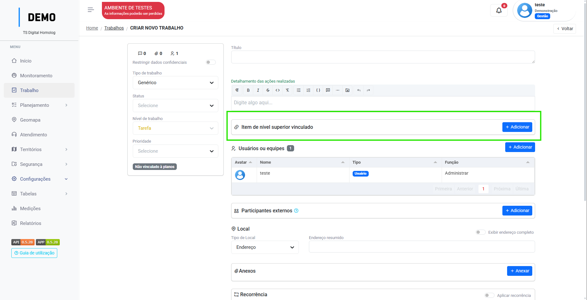
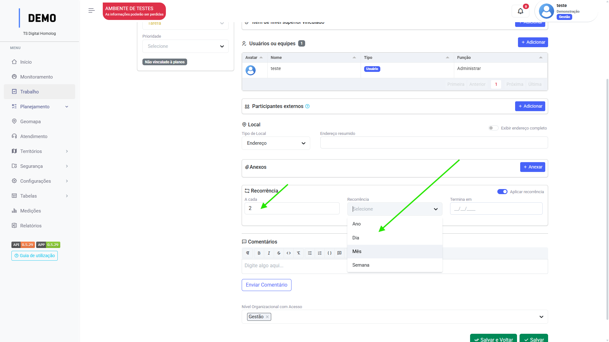
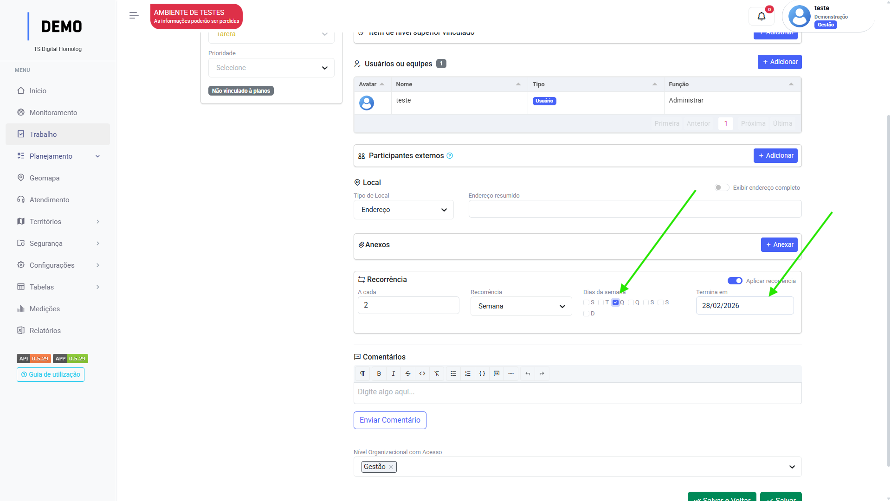

Clique no menu Configurações, acesse Tipo de trabalho e siga os passos:
Clique em "Adicionar".
Insira o nome do tipo de trabalho. (Campo descrição opcional).
Configure os campos nativos do tipo de trabalho:
Você pode escolher se eles serão exibidos, se são obrigatórios e até renomeá-los!
Adicione os campos personalizados.
Clique em "Salvar" ou "Salvar e voltar".
Campos nativos
Cada campo nativo tem sua função dentro das tarefas:
Detalhamento das ações realizadas
Este é um campo de texto que tem como finalidade o registro detalhado do que foi realizado naquela tarefa. O texto é formatável, ou seja, suporta algumas edições como títulos, parágrafos, texto em negrito.
Item de nível superior vinculado
Este campo possibilita o usuário a vincular uma tarefa não planejada a um Projeto ou EAP.
Como fazer os vínculos?
Clique em adicionar
Selecione o plano que deseja realizar o vínculo
Selecione a atividade em que a tarefa será vinculada e clique em "confirmar".

Você pode usar a barra de busca para procurar a atividade:
Usuários ou Equipes
Campo de atribuição de usuários e equipes na tarefa.
Como adicionar usuários?
Clique em adicionar
Selecione o usuário ou equipe que deseja adicionar a tarefa.
Selecione a função daquele usuário ou equipe dentro daquela tarefa.
Clique em "Salvar".
Participantes externos
Este campo tem como finalidade a adição dos participantes daquela tarefa que não necessariamente são usuários da plataforma, são extraídos do menu Pessoas e Famílias.
Como adicionar participantes externos?
Clique em adicionar
Selecione a pessoa que deseja adicionar a tarefa.
Ou selecione "Famílias" e selecione a família que deseja adicionar a tarefa.
Clique em "Salvar".
Local
Campo de seleção do Território em que a tarefa está sendo realizada.
Como selecionar o território?
Este campo pode variar dependendo do tipo de território escolhido.
Se ele for um Empreendimento ou Área territorial, basta realizar a seleção.
Porém, é possível selecionar o tipo como "Endereço" ou "Lote fiscal", o que obrigará o usuário a preencher o campo com caracteres.
Selecione o tipo de local.
Selecione o Território para Área Territorial ou Empreendimento.
Ou selecione "Endereço" e "Lote fiscal" para preencher manualmente.
Quando selecionar "Endereço", pode-se detalhar o endereço clicando no switch "Exibir endereço completo".
Anexos
Campo de adição de anexos a tarefa.
Como anexar arquivos?
Clique em "Anexar".
Selecione o arquivo de seu computador.
Dê um nome ao anexo e selecione o "Tipo de conteúdo".
Ative o switch "usar como evidência" para que o anexo possa ser estraído em futuros relatórios. A plataforma irá orientar o usuário de como o anexo deve ser inserido caso seja usado como evidência, como no exemplo.
Recorrência da tarefa
Campo de seleção de recorrência da tarefa.
Quando uma tarefa pode se repetir diversas vezes, o usuário pode programar neste campo para que esta tarefa esteja sempre presente em sua lista de trabalho, desta forma, toda vez que ele aplicar o status Concluído, uma nova tarefa com os dados copiados dessa tarefa será criada no menu Trabalho, de acordo com a recorrência aplicada.
Como aplicar a recorrência?
Clique no switch de "aplicar recorrência".
Selecione a periodicidade da recorrência, por exemplo "a cada 2 dias".
Se a periodicidade for por semana, você poderá escolher o dia em que ela ocorre, selecione quando ela acaba.


Encaminhamentos
Algumas tarefas podem gerar outras tarefas como "encaminhamento", este campo está disponível para indicar esses casos.
Cria outra tarefa.
Como criar encaminhamentos?
Clique em "Adicionar".
Preencha os dados da tarefa que está será criada como encaminhamento.
Atividade planejada ou vinculada
Campo de vínculo com a Distribuição.
Semelhante ao campo de "Item superior vinculado", faz o vínculo com a distribuição. Porém, neste tipo de trabalho é preciso que possua um produto vinculado a ele, pois o campo só irá disponibilizar as atividades para vínculo que possuam o mesmo produto que o tipo de trabalho.
Como selecionar atividade planejada?
Selecione a Distribuição.
Selecione a atividade.
Comentários
Campo para que os usuários possam trocar comentários nas tarefas.
Como fazer um comentário?
Preencha o campo com o comentário e clique em "enviar comentário".
Campos personalizados
Ao contrário dos campos nativos que possuem parâmetros dentro da plataforma, os campos personalizados são parametrizados pelo próprio usuário. Quando desejar que aquele campo apareça em um tipo de trabalho, basta adicioná-lo:
Na sessão de Campos personalizados, clique em "Adicionar".
Selecione o campo desejado.
Você pode ativar o switch para torná-lo um campo de preenchimento obrigatório, ou ocultá-lo.
Você pode criar regras para aquele campo, como no exemplo:
Neste exemplo, a regra está configurada para que o campo apareça quando a tarefa estiver com status em andamento
Adicione opções exclusivas para escolha naquele tipo de trabalho(opcional)
Clique em "Salvar".
Repita os passos até incluir todos os campos necessários.
Você pode adicionar Produtos ao seu tipo de trabalho no campo:
Para finalidade de medição e relatórios
Padrões
Há uma sessão de configuração dos padrões daquele tipo de trabalho, afim de facilitar o processo de preenchimento das tarefas com aquele tipo de trabalho, por exemplo, definir o título daquela tarefa, status, prioridades e restrição de dados.
Ou seja, o que for definido nos padrões será replicado toda vez que aquele tipo de trabalho for selecionado em uma tarefa. Se o usuário definir que um título no padrão, este será o título da tarefa.